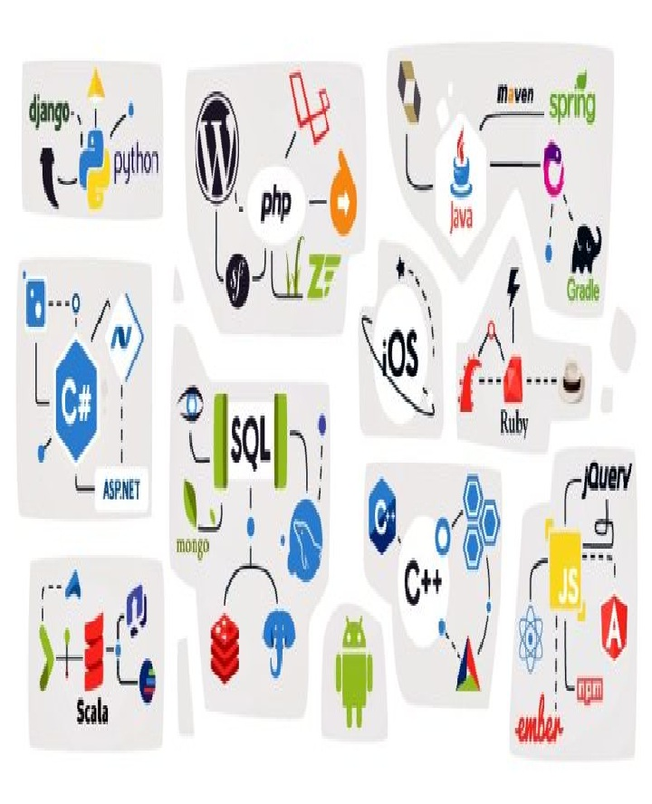

علم الحاسوب (بالإنجليزية: Computer science) أو علوم الكمبيوتر أو الحوسبة هو دراسة العمليات التي تتفاعل مع البيانات والتي يمكن تمثيلها كبيانات في شكل برامج. يتيح استخدام الخوارزميات لمعالجة المعلومات الرقمية وتخزينها وإبلاغها. يدرس عالم الحاسوب نظرية الحوسبة وممارسة تصميم أنظمة البرمجيات.
Computer scienceعلوم الكمبيوتر

مايكروسوفت أوفيس (بالإنجليزية: Microsoft Office) هي حزمة مكتبية من إنتاج شركة مايكروسوفت للبرمجيات. تضم مجموعة من البرامج المكتبية كبرنامج تحرير النصوص وبرنامج قواعد البيانات وبرنامج العروض التقديمية وبرنامج القوائم المحاسبية وغيرها.
Microsoft Officeمايكروسوفت أوفيس

البرمجة هي عملية كتابة تعليمات وتوجيه أوامر لجهاز الحاسوب أو أي جهاز آخر مثل قارئات أقراص الدي في دي أو أجهزة استقبال الصوت والصورة في نظم الاتصالات الحديثة، لتوجيه هذا الجهاز وإعلامه بكيفية التعامل مع البيانات أو كيفية تنفيذ سلسلة من الأعمال المطلوبة تسمى خوارزمية
Programmingبرمجة
نظام المعلومات الجغرافية (بالإنجليزية: Geographic information system ) اختصاراً GIS، هو نظام قائم على الحاسوب يعمل على جمع وصيانة وتخزين وتحليل وإخراج وتوزيع البيانات والمعلومات المكانية
Geographic Information Systemنظام معلومات جغرافية

اإنشاء التصاميم البصرية المتنوعة والبانرات، وذلك من خلال دمج الصور والنصوص وغيرها من العناصر مع بعضها البعض في تصميم واحد.
اعديل الصور الفوتوغرافية، من خلال تغير الألوان أو الإضاءة أو التباين، كما يستخدم لتطوير ملفات صور RAW وإنتاج صور منها.
اا
التلاعب بالصور والتصميمات بإدخال أو إزالة أجزاء أخرى غير موجودة بالملف الأصلي.
ا Photoshopفوتوشوب

نظم المعلومات الإدارية (بالإنجليزية: Management Information Systems) اختصارًا (بالإنجليزية: MIS)؛ هو علم ذات طابع تكنولوجي إداري حديث مهم في العصر الحالي فهو يجمع ما بين تقنية المعلومات والإدارة، يبحث العلم كيفية تطوير النظم الادارية باستخدامي التكنولوجي، لدعم صنع القرار، وللتنسيق والتحكم والتحليل وتصور المعلومات في المنظمة.
Management information systemsنظم المعلومات الإدارية